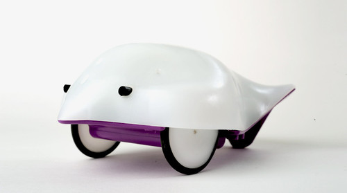
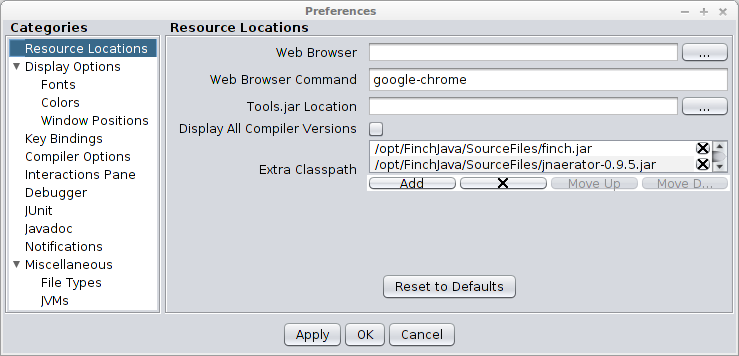

James Madison University, Spring 2014 Semester
Lab10B: Finch robot square dancing

Background
And now, the moment you've all been waiting for...ROBOTS! In today's lab, you will write code to make a Finch robot do a "square" dance.
Objectives
Implement an algorithm that uses repetition and conditionals.
Collaborate with others to gain insight and solve a problem.
Key Terms
- classpath
- user-defined setting that tells Java where to look for classes
Part 0: DrJava Settings
In order to connect to a Finch robot over USB, you'll need to add two Java libraries to your classpath.
-
In DrJava, go to Edit > Preferences. Select "Resource Locations" on the left, and click the "Add" button.
-
Add the files
/opt/FinchJava/SourceFiles/finch.jarand/opt/FinchJava/SourceFiles/jnaerator-0.9.5.jar. -
Your DrJava preferences should now look like:

Part 1: Hello, Finch!
The /opt/FinchJava/SourceFiles/Code directory contains dozens of Java programs that demonstrate the Finch hardware. Today we will focus on examples in the simpleOutput directory.
-
Download
 Dance.java and type your name and today's date in the Javadoc comment.
Dance.java and type your name and today's date in the Javadoc comment. -
If you are working with a partner, make sure your names are in separate
@authortags. -
Compile and run the provided code. Then modify it however you like. Be creative!
-
Skim the Finch API documentation to see the complete list of methods you can call.
Part 2: Square Dancing
Now that you have created your own dance moves, can you do the same dance as everyone else?
-
With your lab partner, write a program that performs the following dance pattern:
Move in a square pattern, full speed ahead, for 1 second each side. Move in a square pattern, full speed reverse, for 0.5 seconds each side. Repeat forever...
-
When you are ready, bring your robot to the dance floor! Make modifications as needed.
-
See if you can make use of the sensors on the robot by calling methods like
isObstacle.
Submit your final version of Dance.java via Canvas by the end of the day. (Each student should turn in their own copy.)